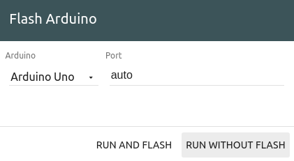
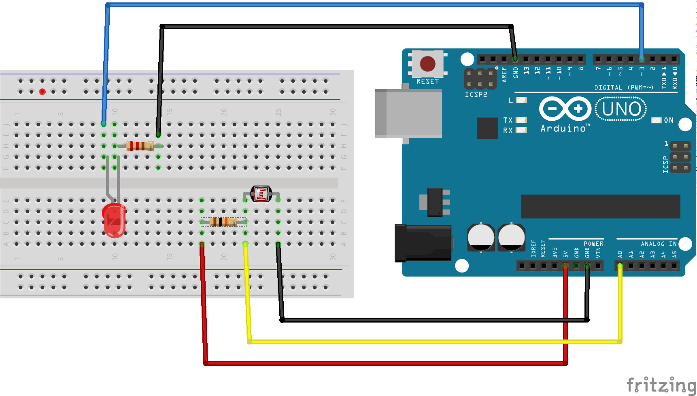
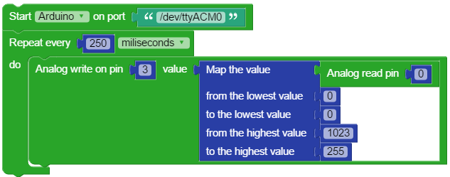

Wyliodrin: Sensors and Dashboard
In this lab is taken from Innovation Labs IoT workshop ocw.cs.pub.ro/courses/iot/labs/08 . You will build a system to monitor the light level and if there is the case, you will turn on the street lights brighter or dimmer, depending on the amount of light.
Introduction
As previously stated, the classical Arduino board is basically a micro-controller, which is capable of running one piece of software at once and that has little processing power and no network connectivity. So you will use the board to gather data from the environment and then pass it on to the Raspberry Pi.
The Raspberry Pi is a computer that is capable of processing data and communicating with other smart devices. For instance, you could visualise the temperature on your smart phone.
Connecting the Pi and Arduino
The two boards need to be connected in order to send data between them. You can connect them via the USB cable and a serial connection will be established between the two. Once this is done, they can exchange data and the Arduino board can be controlled via the Raspberry Pi. This is done by the firmata protocol. The protocol allows the Raspberry Pi to send the Arduino messages in which it requests for a certain action or information and the Arduino will respond accordingly.
In order to implement the protocol, you need to flash the Arduino with the StandardFirmata firmware.
In the Wyliodrin STUDIO interface you have two tabs referring to Raspberry Pi and Arduino. Select the Arduino tab and there is where you can write code which will be run on the Arduino. In this case, you will import an existing project.

Hit the Show examples button and select Arduino. Then use the Firmata/StandardFirmata example. Now that you have the software to run on the Arduino, once you hit the run button, you will be asked the type of the Arduino board and if you want to flash it or not. Select the board you are using and RUN AND FLASH. The StandardFirmata firmware will be deployed on the Arduino.
Any micro-controller, including the Arduino, once flashed, runs the same firmware until another one is uploaded on the board. Thus, you don't have to flash the board each time you run a new Raspberry Pi application. If you are confident that the Arduino is running StandardFirmata, you can skip this step.

Build Circuit
In this application, you will build a system to monitor the light level and if there is the case, you will turn on the street lights brighter or dimmer, depending on the amount of light.
What you need
- One Raspberry Pi connect to \Wyliodrin;
- One Arduino connected to the Raspberry Pi;
- One photocell;
- One LED;
- One 220 Ω resistor
- One 10 kΩ resistor
- Jumper wires.
Physical Setup

The photocell works just like resistor with a variable resistance. Depending on the amount of light it receives, its resistance gets higher or lower. As a result, you can connect it in a voltage divider, as well.
The sensor is connected to the 5V via the 10 K Ohms resistor and to the GND pin on the other side. In order to read the sensor's value, the yellow jumper wire is connected to the A0 pin of the board. The A0-A5 pins can be used for reading digital values, in this case values ranging from 0 to 1024.
For the photocell, the resistance decreases proportionally with the amount of light, so for this schematics, the brighter the environment, the higher is the read value.
In addition, the photocell has a resistance varying from hundred of ohms to mega ohms and in order for the voltage divider to work, you should use the sensor as a pull-down resistor, while the actual resistor needs to have a resistance comparable with the sensor's, otherwise its effect is not visible. This is why you need a 10 k Ohms resistor.
The other part of the setup, the LED is connected similar to the previous schematics except that you can notice that its behaviour is controller by pin 3. That pin has a tilde next to it. That means that it is a PWM pin so you can control if the LED should light up brighter or dimmer. You can write values ranging from 0 to 255 on these pins, 0 being the equivalent of digital 0 and 255 the equivalent of digital 1.
The Code
The last node to use is Arduino out. This node acts just like the digital write node used in the previous chapters. However, you still need to select the port for the Arduino board and you can choose from analog or digital write. As you want to make the LED light up brighter or dimmer, you will set the type to analog and the pin property has to be 3.
Now you can run the application and watch how the LED gets brighter as you cover up the sensor.
Exercises
Display the values coming from the light sensor in the dashboard using the gauge graph.
Write the program using the Visual programming language. Create a new Visual Programming project called "Street Lights Visual" and use the following code: 
Connect all the sensors in the kit to the Arduino and display the values you read in the dashboard. Note: Do not connect the Hall sensor, which works in a different way.
Search the temperature sensor's datasheet online (TMP36) and transform the read values to celsius degrees.